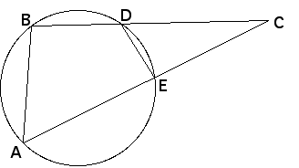

| Here we show that circles not passing through the center of the inverting circle invert to other circles not passing through the center of the inverting circle. |
| First we establish a property of circles: |
|
|
|
|  |
| Now suppose C is a circle outside the inverting circle. |
| A point P on C inverts to a point P' with OP*OP' = r2, where r is the radius of the inverting circle. Consequently, |
| OP' = r2/OP |
| Let Q be the other point of C on the line through O and P. |
| Then by the result above, OQ*OP = k, so |
| OQ = k/OP |
| Combining the two red equations gives |
| OP'/OQ = r2/k |
| That is, |
| OP' = (r2/k)OQ |
| As Q traces out the points of C, P' also traces out a circle, because OP' is
OQ, scaled by a constant factor |
| An algebraic derivation of the formula for the center and radius of the inverted circle is found here. |
Return to properties of inversion.